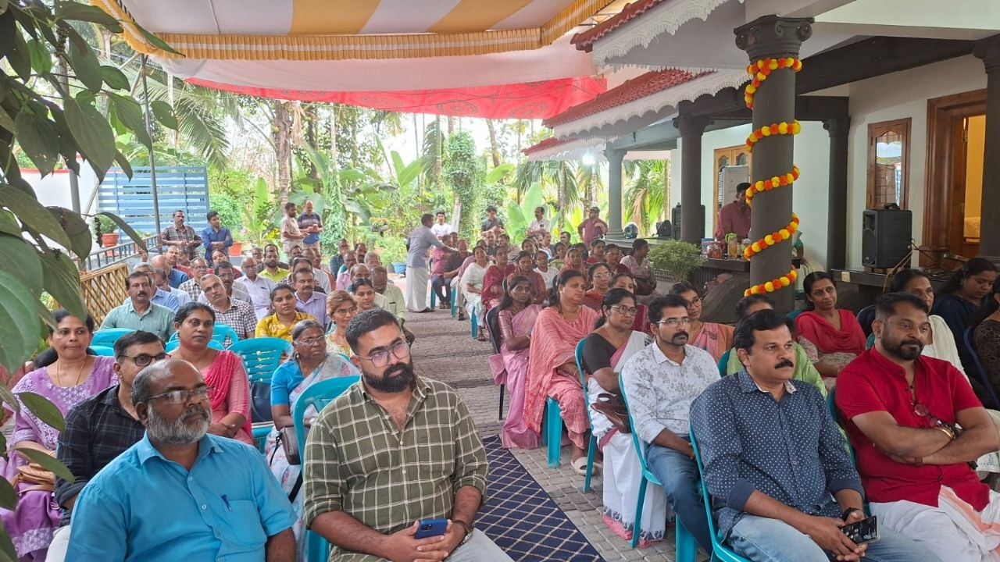

വളരെ മനോഹരമായ അനുഭവമായിരുന്നു ഇന്നലത്തെ വീട്ടുമുറ്റ ചർച്ച സായാഹ്നം. വിശദമായ സ്വാഗത പ്രസംഗത്തോടെ തുടങ്ങിയ പ്രോഗ്രാം മിസാറു വിലെ ആദ്യചോദ്യോത്തരം വരെ മാത്രമേ കേൾക്കാൻ കഴിഞ്ഞുള്ളൂ എങ്കിലും എല്ലാവരും പറഞ്ഞതുപോലെ ഭാഷയും സംസ്കാരവും ഒക്കെ വെട്ടി മാറ്റി വൈവിധ്യങ്ങളെ ഏകത്വത്തിൽ എത്തിക്കുമ്പോൾ ഉണ്ടാകുന്ന അപകടങ്ങളെക്കുറിച്ച് സൂചിപ്പിച്ചുകൊണ്ട് നിലപാടുകൾ നിലനിർത്തിയുള്ള സംസാരം അതീവ ഹൃദ്യമായിരുന്നു.
അദ്ദേഹത്തിന്റെ കഥയിലെ പാഹറിന്റെ മരണത്തോളം കൂടെയെത്തിയ വിശപ്പിനെ കുറിച്ച് ചോദിക്കണമെന്ന് കരുതിയെങ്കിലും അത്യാവശ്യം ഉള്ളതുകൊണ്ട് നേരത്തെ പോരേണ്ടി വന്നതുകൊണ്ട് ചോദിക്കാൻ പറ്റിയില്ല. ശേഷം കാഴ്ചകളും വിശേഷങ്ങളും ഗ്രൂപ്പിലൂടെ കണ്ടു.
മികച്ച പങ്കാളിത്തത്തോടെയുള്ള പരിപാടി ഗംഭീരമായതിൽ സന്തോഷം. അണിയറയിലും അരങ്ങത്തും പ്രവർത്തിച്ചവർക്കും രതി ടീച്ചറിനും കുടുംബത്തിനും അഭിനന്ദനങ്ങൾ 💐💐